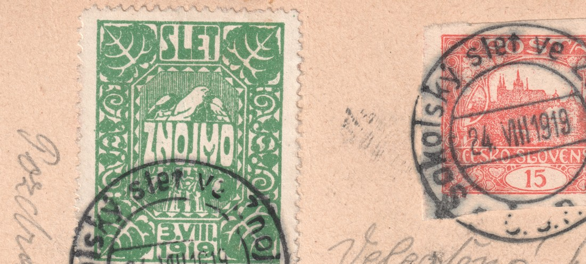

Župní slet sokolský ve Znojmě, 24. srpna 1919 — nejstarší příležitostné razítko na Hradčanech
Mezi doklady poštovního provozu Hradčan zaujímá zvláštní místo jedna pohlednice odeslaná ze Znojma do Štramberku na Moravě. Nese jediné razítko — kruhové příležitostné razítko ŽUPNÍ SLET SOKOLSKÝ VE ZNOJMĚ · C.S.P. s datem 24. VIII. 1919, tedy z prvního dne sletu. Podle dosavadní evidence jde o nejstarší doložené použití československého příležitostného razítka na známkách emise Hradčany.

Celistvost a frankatura
Pohlednice je frankována jedinou známkou 15 h cihlově červenou, nezoubkovanou, určenou jako pole 73 z tiskové desky II. Sazba 15 h za dopisnici odpovídá II. tarifnímu období (15. 5. 1919 – 14. 3. 1920), do něhož datum 24. 8. 1919 spadá. Adresátkou byla slečna Marta Kokršková ve Štramberku.


Druhý doložený kus — ZP 57/II, zoubkování A
Ve sbírce se podařilo dohledat i druhou známku se stejným razítkem — tentokrát samostatnou, bez celistvosti, se zoubkováním A (13¾:13½) a určenou jako pole 57 z téže tiskové desky II. Otisk razítka je na tomto kusu plně čitelný a potvrzuje text i datum shodně s kusem na pohlednici.

Dva různé exempláře téže desky, jeden nezoubkovaný a jeden se zoubkováním A, ukazují, že razítko bylo v den sletu k dispozici pro oba tehdy současně oběhající stavy archů TD II.
Razítko samotné
Příležitostné razítko neslo v horním oblouku text SOKOLSKÝ SLET VE ZNOJMĚ, v dolním oblouku zkratku C.S.P. (Česko-slovenská pošta) a uprostřed přestavitelný datumový můstek s údajem 24. VIII. 1919. Dochovala se i fotografie samotného razítkovacího strojku (zrcadlově, jak je vidět na kovovém/pryžovém typu před otiskem):

Třetí doložený kus — celistvost do Německého Brodu, ZP 76/I
Ke stejnému razítku se podařilo dohledat i třetí celistvost — pohlednici zaslanou rovněž ze Znojma, adresovanou paní E. Vodičkové do Německého Brodu (vila Klementka). Frankována je 15 h cihlově červenou, nezoubkovanou, kterou automatické rozpoznávání tiskových desek (na základě knihovny 15h k5) určilo jako pole 76 tiskové desky I s výraznou převahou nad ostatními kandidáty (pravděpodobnost 0,68 proti nejvýše 0,04–0,11 u všech ostatních desek a polí) — jde tak o první doložený kus s tímto razítkem z jiné desky než II. Kvůli silnému otisku razítka přes návrh nebylo možné určení zcela potvrdit okem podle katalogových odlišovacích znaků; přesto jde vzhledem k rozdílu pravděpodobností o spolehlivý odhad.

Zajímavostí této celistvosti je, že vedle poštovní známky nese i zelenou nepoštovní sletovou nálepku SLET ZNOJMO s motivem sokola (s vlastním předtištěným datem 8. VIII. 1919) — a obě byly na pohlednici svázány týmž příležitostným razítkem z 24. VIII. 1919. Doklad tak ukazuje, že se razítkem příležitostně opatřovaly i soukromé sokolské nálepky, nejen platné výplatní známky.


Proč je toto razítko první
Příležitostná razítka se v poválečném Československu začala pravidelně objevovat až v následujících letech; razítko ke znojemskému sletu z 24. srpna 1919 předchází — podle dosavadní evidence sestavené k Hradčanům — všechna ostatní doložená použití příležitostných razítek na této emisi. Se třemi dosud dohledanými kusy — dvěma z tiskové desky II a jedním z desky I — je navíc zřejmé, že pošta ve Znojmě měla ten den k dispozici zásobu 15 h z více než jedné desky. Pokud je čtenářům známo starší datované použití na Hradčanech, budeme rádi za upozornění — evidence bude s novými nálezy průběžně doplňována.
Sokol regional rally in Znojmo, 24 August 1919 — the earliest commemorative postmark on the Hradčany issue
Among the records of postal use of the Hradčany issue, one postcard sent from Znojmo to Štramberk in Moravia holds a special place. It carries a single cancellation — the circular commemorative postmark SOKOLSKÝ SLET VE ZNOJMĚ · C.S.P. ("Sokol regional rally in Znojmo") dated 24 August 1919, the first day of the rally. According to the records compiled so far, this is the earliest documented use of a Czechoslovak commemorative postmark on a stamp of the Hradčany issue.
The cover and its franking
The postcard is franked with a single 15 h brick red, imperforate stamp, attributed to field 73 of printing plate II. The 15 h postcard rate matches the 2nd tariff period (15 May 1919 – 14 March 1920), which covers the date 24 August 1919. The addressee was Miss Marta Kokršková in Štramberk.
A second recorded copy — field 57/II, perforation A
A second stamp with the same cancellation has also been found in the collection — this time a single copy, off cover, with perforation A (13¾:13½) and attributed to field 57 of the same printing plate II. The strike is fully legible on this copy and confirms the same text and date as the copy on the postcard.
Two different copies from the same plate — one imperforate, one perforation A — show that the postmark was available on the day of the rally for both states of the plate II sheets then concurrently in circulation.
The postmark itself
The commemorative postmark carried the text SOKOLSKÝ SLET VE ZNOJMĚ around the upper arc, the abbreviation C.S.P. ("Czecho-Slovak Post") around the lower arc, and an adjustable date bridge reading 24 August 1919 in the centre. A photograph of the postmarking device itself has also survived (mirrored, as seen on the metal/rubber type before an impression is taken):
Why this postmark comes first
Commemorative postmarks only became a regular feature of the post-war Czechoslovak post in the following years; the postmark for the Znojmo rally of 24 August 1919 precedes — according to the records compiled so far for the Hradčany issue — every other documented use of a commemorative postmark on this issue. If readers know of an earlier dated use on a Hradčany stamp, we would be glad to hear of it — the records will be updated as new finds come to light.